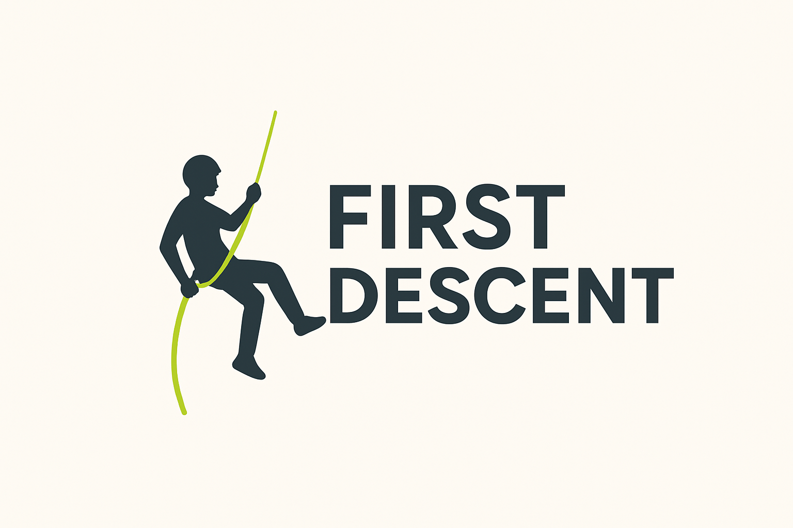
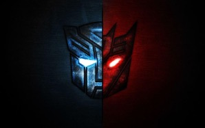

Client Report - First Descent
- As a client, I chose my content and images for my site plan based on one of my favorite hobbies, which is cave exploration. I decided that I wanted a small, simple website to give some of the basics that were taught to me by my father many years ago. I did a bit of research for some of the techniques and systems that I personally don't use, but the majority of the information I included came from my own personal experiences.
- I communicated with my developer, Dylan Davis, using the BYU-Idaho email. This method worked for me, and I didn't run into any issues with communication.
- I was satisfied with the way my site turned out, and I feel like Dylan met my expectations.
- Next time I hire a team to do a project for me, I plan to be a bit more present in the development process. For this site, I like the way it turned out and don't have any complaints, but looking back there wasn't much communication between me and the team, which was okay, but I'd like to try communicating more in the future.
Lead Developer Report - The Modern Lens - Home Page
- As the leader of a development team, I chose a more hands-off approach to manage my development team to allow them to exercise their creativity and to not come across as an overbearing leader. Though, I think I should have been a bit more involved, since my junior developers didn't seem to do much for a while. I added them on GitHub and sent them the site plan over the BYU-Idaho email, but they didn't reply or interact much with me in class, so I should have taken the initiative better.
- I communicated with my client, Kameron Meeker, using our personal emails, though this could have been better. There were occasions when I would email him asking for something and he would either take a long time to respond or simply not respond at all, so I think perhaps texting would have been a better mode of communication.
- I actually forgot to share the published website with Kameron until the very last minute, so that's something that I definitely need to improve upon in future projects (though I don't think he ever requested access to it).
- I had a good experience managing my site with GitHub and there were no complications with this site.

Junior Developer Report - The Transformers - Decepticons Page
- As a junior developer, I communicated with my team lead, Kameron Meeker, using our personal emails, which was only once when I asked him which child page he wanted me to develop. Other than this one time, I got everything I needed from GitHub so extra communication wasn't necessary.
- I feel like I was able to understand what was expected of me for this site based on what was included on the site plan and wireframe, but our client could have included more of the information he wanted in the site plan. I ended up needing to do a good amount of research to figure out what he wanted, but it wasn't too bad.
- I was able to contribute to this site.
- I ran into one issue with GitHub and Visual Studio when adding my changes to the site, which was that it had multiple branches, so I needed Brother Alvey's help to fix that.
Junior Developer Report - Galactic Empire - Planet Spotlight Page
- As a junior developer, I communicated with my team lead, Tristan Zatylny, using Microsoft Teams, which worked out well. Using teams, he sent us the site plan and delegated certain pages to us to complete.
- I feel like I was able to understand what was expected of me for this site based on what was included on the site plan and wireframe, and I didn't need to find any missing information, so that was greatly appreciated.
- I was able to contribute to this site.
- I ran into one issue with GitHub and Visual Studio when adding my changes to the site, which was that it had multiple branches, so I needed Brother Alvey's help to fix that.
General Experience and Reflections
- For me, the most challenging part of this project was the issue of multiple branches on the two sites that I was a junior developer, and it lasted for multiple days before I could get Brother Alvey's help on it.
- I most enjoyed seeing our websites come together as CSS was added and perfected. For me, I needed a fair amount of help from AI for the CSS, but as I used it, I found myself understanding more and was very pleased with how my pages turned out.
- If I could do the project again, I would try to have more communication within my groups, perhaps doing a study session where we all just worked on our pages and helped each other out if needed.
- After this experience, I feel more confident in working on real-world projects because I am now somewhat familiar with GitHub, which is what I would likely use with another team. Additionally, I had the chance to practice using various resources to aid me in developing the sites, so I now know which ones I prefer and how I like to use them.